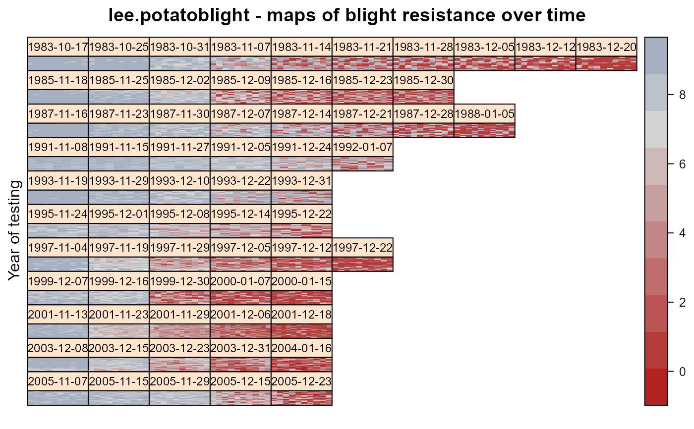
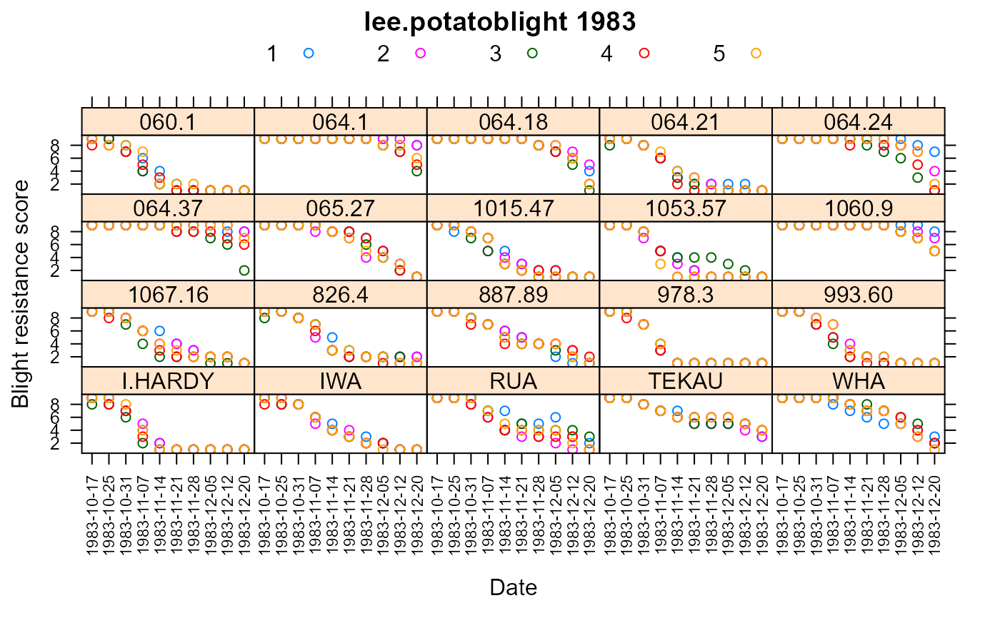

lee.potatoblight.RdRepeated measurements of resistance to potato blight.
data("lee.potatoblight")
A data frame with 14570 observations on the following 7 variables.
yearplanting year
gengenotype / cultivar factor
colcolumn
rowrow
repreplicate block (numeric)
datedate for data collection
yscore 1-9 for blight resistance
These data werre collected from biennial screening trials conducted by the New Zealand Institute of Crop and Food Research at the Pukekohe Field Station. The trials evaluate the resistance of potato cultivars to late blight caused by the fungus Phytophthora infestans. In each trial, the damage to necrotic tissue was rated on a 1-9 scale at multiple time points during the growing season.
Lee (2009) used a Bayesian model that extends the ordinal regression of McCullagh to include spatial variation and sigmoid logistic curves to model the time dependence of repeated measurements on the same plot.
Data from 1989 were not included due to a different trial setup being used. All the trials here were laid out as latinized row-column designs with 4 or 5 reps. Each plot consisted of four seed tubers planted with two Ilam Hardy spread plants in a single row 2 meters long with 76 centimeter spacing between rows.
In 1997, 18 plots were lost due to flooding. In 2001, by the end of the season most plants were nearly dead.
Note, in plant-breeding, it is common to use a "breeder code" for each genotype, which after several years of testing is changed to a registered commercial variety name. For this R package, the Potato Pedigree Database, https://www.plantbreeding.wur.nl/potatopedigree/reverselookup.php, was used to change breeder codes (in early testing) to the variety names used in later testing. For example, among the changes made were the following:
| Driver | 287.12 |
| Kiwitea | 064/56 |
| Gladiator | 1308.66 |
| Karaka | 221.17 |
| Kiwitea | 064.56 maybe 064.54 |
| Moonlight | 511.1 |
| Pacific | 177.3 |
| Red Rascal | 1830.11 |
| Rua | 155.05 |
| Summit | 517.12 |
| White Delight | 1949.64 |
Used with permission of Arier Chi-Lun Lee and John Anderson.
Data retrieved from https://researchspace.auckland.ac.nz/handle/2292/5240.
Licensed via Open Database License 1.0. (allows sub-licensing). See: https://opendatacommons.org/licenses/dbcl/1.0/
Lee, Arier Chi-Lun (2009). Random effects models for ordinal data. Ph.D. thesis, The University of Auckland. https://researchspace.auckland.ac.nz/handle/2292/4544.
# \dontrun{ library(agridat) data(lee.potatoblight) dat <- lee.potatoblight # Common cultivars across years. # Based on code from here: https://stackoverflow.com/questions/20709808 gg <- tapply(dat$gen, dat$year, function(x) as.character(unique(x))) tab <- outer(1:11, 1:11, Vectorize(function(a, b) length(Reduce(intersect, gg[c(a, b)])))) head(tab) # Matches Lee page 27.#> [,1] [,2] [,3] [,4] [,5] [,6] [,7] [,8] [,9] [,10] [,11] #> [1,] 20 10 7 5 3 2 3 2 3 3 2 #> [2,] 10 30 17 5 4 3 4 4 5 4 2 #> [3,] 7 17 35 9 6 3 4 5 6 4 3 #> [4,] 5 5 9 35 16 8 9 14 15 13 11 #> [5,] 3 4 6 16 40 12 11 18 18 16 14 #> [6,] 2 3 3 8 12 30 13 10 9 8 7## [,1] [,2] [,3] [,4] [,5] [,6] [,7] [,8] [,9] [,10] [,11] ## [1,] 20 10 7 5 3 2 3 2 3 3 2 ## [2,] 10 30 17 5 4 3 4 4 5 4 2 ## [3,] 7 17 35 9 6 3 4 5 6 4 3 ## [4,] 5 5 9 35 16 8 9 14 15 13 11 ## [5,] 3 4 6 16 40 12 11 18 18 16 14 # Note the progression to lower scores as time passes in each year skp <- c(rep(0,10), rep(0,7),1,1,1, rep(0,8),1,1, rep(0,6),1,1,1,1, rep(0,5),1,1,1,1,1, rep(0,5),1,1,1,1,1, rep(0,6),1,1,1,1, rep(0,5),1,1,1,1,1, rep(0,5),1,1,1,1,1, rep(0,5),1,1,1,1,1) libs(desplot) desplot(dat, y ~ col*row|date, ylab="Year of testing", # unknown aspect layout=c(10,11),skip=as.logical(skp), main="lee.potatoblight - maps of blight resistance over time")# 1983 only. I.Hardy succumbs to blight quickly libs(lattice) xyplot(y ~ date|gen, dat, subset=year==1983, group=rep, xlab="Date", ylab="Blight resistance score", main="lee.potatoblight 1983", as.table=TRUE, auto.key=list(columns=5), scales=list(alternating=FALSE, x=list(rot=90, cex=.7)))# }